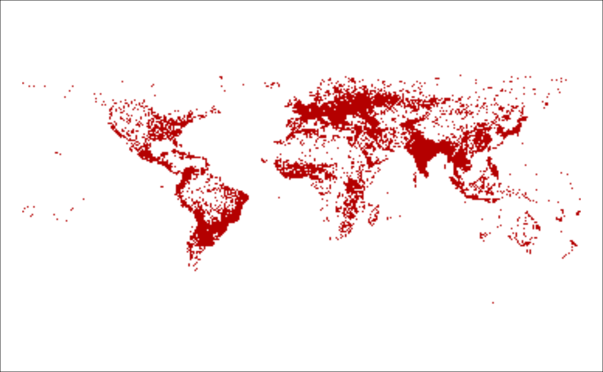

tag_chronology.RdRetrieve various data on OSM tags, i.e. key-value pairs. This includes:
tag_chronology: Returns a history of nodes, ways, and
relations for a given tag.
tag_combinations: Returns combinations of tags that often
co-occur.
tag_distribution: Returns an image (or plot) of the spatial
distribution of tags.
tag_overview: Returns a list containing a detailed summary
of tag metadata.
tag_projects: Returns all projects using a tag.
tag_stats: Returns the total number of nodes, ways, and
relations associated with a tag.
tag_wiki_pages: Returns information on the wiki pages
associated with a tag.
Name of the key, e.g. "amenity" from "amenity=hospital".
Name of the value, e.g. "hospital" from "amenity=hospital".
A search term to filter results by. For key_combinations
and key_similar, this matches the other_key column, for
key_projects the project name or tag value, for key_values
the value. Defaults to NULL, i.e. no filtering.
Additional generic parameters used for pagination, filtering, and sorting. Can include the following:
page: If pagination is enabled, specifies the page number.
rp: Enables pagination and specifies the number of results
returned per page.
filter: A character vector specifying the OSM geometry type
to filter the results by. For example, if "nodes", only tags on
nodes are returned. Can be several of "all" (no filtering),
"nodes", "relations", or "ways".
sortname: Numeric column of the output by which to arrange the
results.
sortorder: Whether to sort ascending ("asc") or
descending ("desc").
Note that not all additional arguments are defined for all API methods.
For details, refer to api_spec.
OSM geometry type of the key whose distribution should be
plotted. Must be either "nodes" or "ways". Defaults to
"nodes".
Path to a file where the plot should be written to.
Whether to plot the distribution using the R graphics device
using show_image. If FALSE, simply returns
the path to the file. Defaults to TRUE.
tag_chronology, tag_combinations, tag_projects,
tag_stats, and tag_wiki_pages return a dataframe.
tag_overview returns a named list. tag_distribution returns
the path to an image and (optionally) plots the image using
show_image.
# Retrieve the history of a tag
history <- tag_chronology("amenity", "hospital")
history$nodes <- cumsum(history$nodes)
with(history, plot(date, nodes, type = "l"))
# Only retrieve number of hospitals that are explicitly buildings
tag_combinations("amenity", "hospital", query = "building")
#> # A tibble: 4 × 5
#> other_key other_value together_count to_fraction from_fraction
#> <chr> <chr> <int> <dbl> <dbl>
#> 1 building:levels "" 3759 0.0178 0.0001
#> 2 building "hospital" 6146 0.0292 0.0411
#> 3 building "yes" 12783 0.0606 0
#> 4 building "" 19530 0.0927 0
# Only retrieve combinations for hospitals that are mapped as relations
tag_combinations("amenity", "hospital", filter = "relations")
#> # A tibble: 89 × 5
#> other_key other_value together_count to_fraction from_fraction
#> <chr> <chr> <int> <dbl> <dbl>
#> 1 addr:state "Telangana" 1 0.0002 1
#> 2 name:ko-Latn "" 1 0.0002 0.0013
#> 3 ncat "" 1 0.0002 0.025
#> 4 source "http://kr.open.gugi.y… 1 0.0002 0.167
#> 5 source "Local Knowledge" 3 0.0007 0.15
#> 6 addr:block "" 4 0.001 0.0147
#> 7 addr:state "Tamil Nadu" 6 0.0014 0.857
#> 8 name:ko "" 9 0.0022 0.0005
#> 9 source "KSJ2" 15 0.0036 0.014
#> 10 source:date "" 17 0.0041 0.0001
#> # ℹ 79 more rows
# Plot distribution of tags
tag_distribution("amenity", "hospital", type = "nodes")

tag_distribution("highway", "residential", type = "ways")
summ <- tag_overview("amenity", "post_box")
str(summ)
#> List of 7
#> $ key : chr "amenity"
#> $ value : chr "post_box"
#> $ counts :'data.frame': 4 obs. of 3 variables:
#> ..$ type : chr [1:4] "all" "nodes" "ways" "relations"
#> ..$ count : int [1:4] 385844 385720 123 1
#> ..$ count_fraction: num [1:4] 0 0.0015 0 0
#> $ wiki_pages :'data.frame': 13 obs. of 4 variables:
#> ..$ lang : chr [1:13] "ca" "cs" "de" "en" ...
#> ..$ english: chr [1:13] "Catalan" "Czech" "German" "English" ...
#> ..$ native : chr [1:13] "Català" "Čeština" "Deutsch" "English" ...
#> ..$ dir : chr [1:13] "ltr" "ltr" "ltr" "ltr" ...
#> $ projects : int 26
#> $ has_map : logi TRUE
#> $ description:List of 12
#> ..$ ca :List of 2
#> .. ..$ text: chr "Un receptable accessible al pública on es col·loca la correspondència per a ser enviada.."
#> .. ..$ dir : chr "ltr"
#> ..$ cs :List of 2
#> .. ..$ text: chr "Poštovní schránka pro odchozí poštu"
#> .. ..$ dir : chr "ltr"
#> ..$ de :List of 2
#> .. ..$ text: chr "Kasten zum Einwerfen von Briefen durch den Versender zwecks Weitertransport durch das Postunternehmen"
#> .. ..$ dir : chr "ltr"
#> ..$ en :List of 2
#> .. ..$ text: chr "A box to deposit outgoing postal items."
#> .. ..$ dir : chr "ltr"
#> ..$ es :List of 2
#> .. ..$ text: chr "Una caja o receptáculo para depositar los envíos postales salientes."
#> .. ..$ dir : chr "ltr"
#> ..$ fr :List of 2
#> .. ..$ text: chr "Une boîte aux lettres pour l'expédition du courrier."
#> .. ..$ dir : chr "ltr"
#> ..$ ja :List of 2
#> .. ..$ text: chr "郵便ポスト。郵便物を出すボックスです。"
#> .. ..$ dir : chr "ltr"
#> ..$ pl :List of 2
#> .. ..$ text: chr "Zaznaczenie lokalizacji skrzynki pocztowej."
#> .. ..$ dir : chr "ltr"
#> ..$ pt :List of 2
#> .. ..$ text: chr "Caixa de correio, caixa postal ou marco de correio: recipiente, normalmente só com uma ranhura (ou mais se tive"| __truncated__
#> .. ..$ dir : chr "ltr"
#> ..$ ru :List of 2
#> .. ..$ text: chr "Почтовый ящик для сбора исходящих почтовых отправлений."
#> .. ..$ dir : chr "ltr"
#> ..$ uk :List of 2
#> .. ..$ text: chr "Поштова скриня для вихідних поштових відправлень."
#> .. ..$ dir : chr "ltr"
#> ..$ zh-hant:List of 2
#> .. ..$ text: chr "用來存入物品郵寄的箱子。"
#> .. ..$ dir : chr "auto"
# Retrieve JOSM projects on hospitals
tag_projects("amenity", "hospital", query = "josm")
#> # A tibble: 11 × 12
#> project_id project_name project_icon_url key value on_node on_way
#> <chr> <chr> <chr> <chr> <chr> <lgl> <lgl>
#> 1 josm_main_mappaint_… JOSM main m… https://josm.op… amen… hosp… TRUE FALSE
#> 2 josm_main_presets JOSM main p… https://josm.op… amen… hosp… TRUE FALSE
#> 3 josm_external_prese… JOSM user p… https://josm.op… amen… hosp… TRUE FALSE
#> 4 josm_external_prese… JOSM user p… https://josm.op… amen… hosp… TRUE FALSE
#> 5 josm_external_prese… JOSM user p… https://josm.op… amen… hosp… TRUE FALSE
#> 6 josm_external_prese… JOSM user p… https://josm.op… amen… hosp… TRUE FALSE
#> 7 josm_external_prese… JOSM user p… https://josm.op… amen… hosp… TRUE FALSE
#> 8 josm_external_prese… JOSM user p… https://josm.op… amen… hosp… TRUE FALSE
#> 9 josm_external_prese… JOSM user p… https://josm.op… amen… hosp… TRUE FALSE
#> 10 josm_external_prese… JOSM user p… https://josm.op… amen… hosp… TRUE TRUE
#> 11 josm_external_prese… JOSM user p… https://josm.op… amen… hosp… TRUE TRUE
#> # ℹ 5 more variables: on_relation <lgl>, on_area <lgl>, description <chr>,
#> # doc_url <lgl>, icon_url <chr>
# Retrieve number of tags for each geometry type
tag_stats("amenity", "hospital")
#> # A tibble: 4 × 3
#> type count count_fraction
#> <chr> <int> <dbl>
#> 1 all 210779 0
#> 2 nodes 113312 0.0005
#> 3 ways 93298 0.0001
#> 4 relations 4169 0.0003
# Retrieve wiki pages on a tag
tag_wiki_pages("amenity", "hospital")
#> # A tibble: 13 × 15
#> lang dir language language_en title description image$title on_node on_way
#> <chr> <chr> <chr> <chr> <chr> <chr> <chr> <lgl> <lgl>
#> 1 cs ltr Čeština Czech Cs:T… "Nemocnice" File:RWB K… TRUE FALSE
#> 2 de ltr Deutsch German DE:T… "Eine medi… File:RWB K… TRUE FALSE
#> 3 en ltr English English Tag:… "A hospita… File:Inten… TRUE FALSE
#> 4 es ltr Español Spanish ES:T… "Estableci… File:RWB K… TRUE FALSE
#> 5 fr ltr Français French FR:T… "Établisse… NA TRUE FALSE
#> 6 it ltr Italiano Italian IT:T… "Un ospeda… File:Inten… TRUE FALSE
#> 7 ja ltr 日本語 Japanese JA:T… "入院治療… File:Inten… TRUE FALSE
#> 8 ko ltr 한국어 Korean Ko:T… "입원 치료… File:Inten… TRUE FALSE
#> 9 pl ltr Polski Polish Pl:T… "Szpital z… File:Znak … TRUE FALSE
#> 10 pt ltr Portugu… Portuguese Pt:T… "Hospital:… File:US Na… TRUE FALSE
#> 11 pt-br ltr Portugu… Brazilian … Pt-b… "" NA FALSE FALSE
#> 12 ru ltr Русский Russian RU:T… "Больница … File:Inten… TRUE FALSE
#> 13 uk ltr Українс… Ukrainian Uk:T… "Великий м… File:Inten… TRUE FALSE
#> # ℹ 12 more variables: image$width <int>, $height <int>, $mime <chr>,
#> # $image_url <chr>, $thumb_url_prefix <chr>, $thumb_url_suffix <chr>,
#> # on_area <lgl>, on_relation <lgl>, tags_implies <list>,
#> # tags_combination <list>, tags_linked <list>, status <chr>